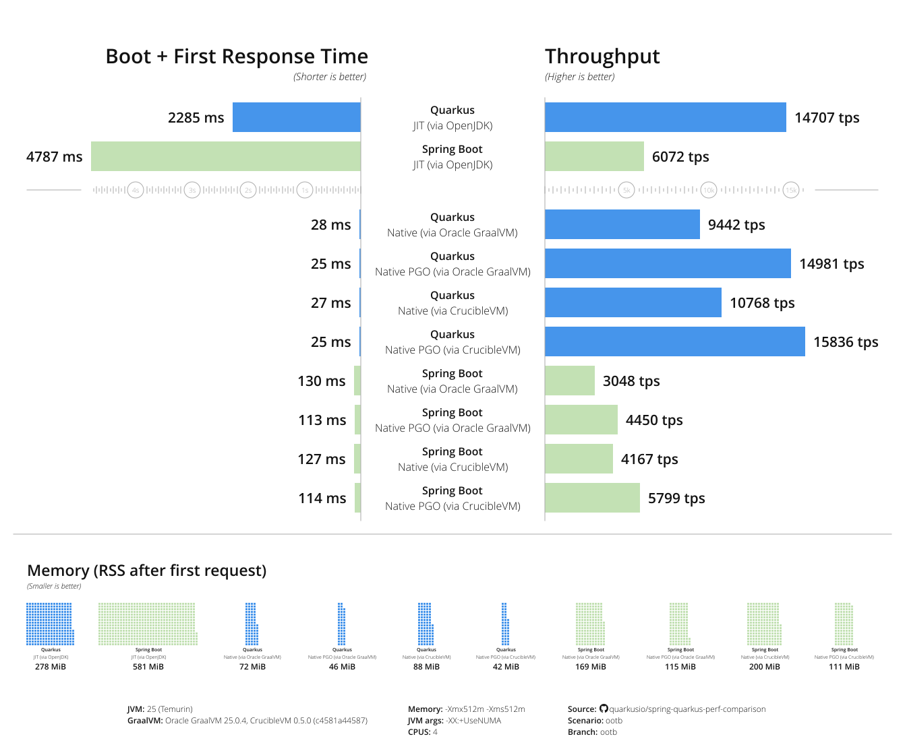
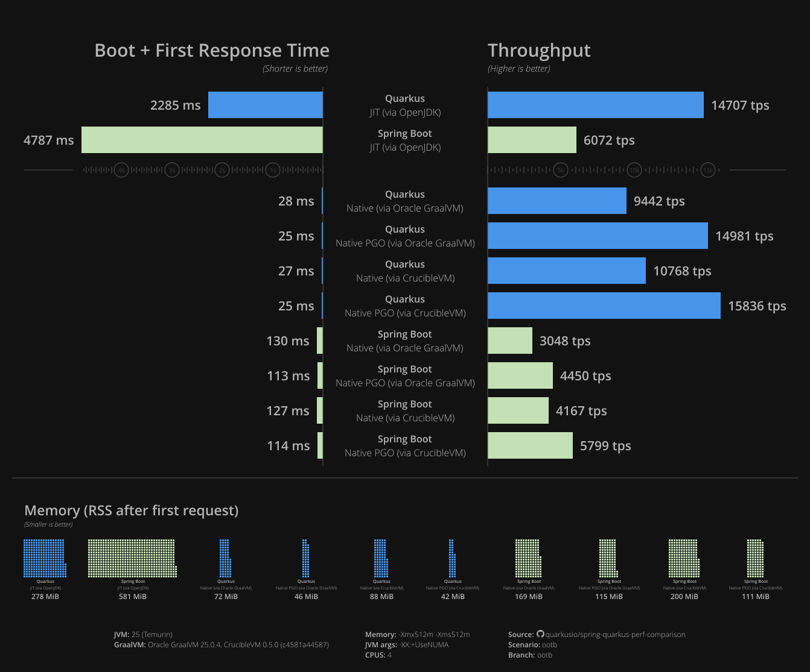

Three builds, one of them shipped
One script does it all; the steps it takes are below, for doing them by hand. Every option is a -H: option behind -H:+UnlockExperimentalVMOptions.
In one command
# from the release archive; in a source tree, crucible/pgo.sh
tar xzf cruciblevm-0.5.0-linux-x86_64.tar.gz
cruciblevm/crucible/pgo.sh --name app --run '$APP <your workload arguments>' -- -cp app.jar com.example.MainIt builds an image that records, runs your workload on it, builds an image that samples call stacks, runs the workload again, and builds ./app, the image to ship. In --run, $APP is the image to run; the workload has to let it exit normally, so stop a service with SIGTERM (build it with --install-exit-handlers). --no-samples stops after the counted profile. For Spring PetClinic the whole command takes about a quarter of an hour.
-
Build an image that records
source crucible/env.sh && cd substratevm mx native-image -O3 -cp app.jar -o app-recording \ -H:+UnlockExperimentalVMOptions -H:+CrucibleInstrument com.example.Main -
Run it on a representative workload
It writes
crucible-profile.jsonwhen it exits. The recording image runs about twice as slow as normal../app-recording <the usual arguments> -
Build the image you ship
mx native-image -O3 -cp app.jar -o app \ -H:+UnlockExperimentalVMOptions -H:CrucibleProfile=crucible-profile.json com.example.Main
The second build says what it made of the profile, and warns when the profile does not fit the program. Profiles from several runs merge with merge-profiles.py; sampled call stacks from JFR can be added with jfr-to-samples.py; and a profile recorded by Oracle GraalVM (.iprof) converts with iprof-to-crucible.py.
What it does
The profile work reaches the compiler through extension points upstream already has, with a few lines changed upstream where one was missing, so rebasing onto a new GraalVM stays simple. The collector and System.arraycopy changes are changes to upstream's own files.
-
The class library's profile
A build without a profile gives the library's branches the probabilities other programs recorded for them, from a profile that comes with the builder.
-
Branch probabilities
Counted in every place a method is inlined, and applied before inlining, so layout, inlining and the loop optimizations all see them.
-
Receiver types
Counted at every virtual call in every calling context. The inliner tests for the common receivers first and inlines their methods.
-
Loop range splitting
A hot loop whose checks always go one way runs its middle part without them — which also lets the vectorizer take it.
-
Cold code for size
Methods the run never reached don't inline and are compiled as
-Oswould: images 7 to 12% smaller at the same speed. -
Code layout
The code section is ordered by how often each method ran.
-
Hot methods at
-O3Below
-O3, hot methods still get its inliner, unrolling and vectorization —-O3speed in an-O2-sized image on the samples. -
The collector, too
GC branches are profiled like the program's, and the serial collector promotes and copies the way a profiled program wants.
-
Young collection on several threads
The serial collector scans its young generation on up to nine threads, by default since 0.4.0. Programs that collect on several threads of their own gain most.
-
A young generation sized for speed
The collector aims to spend a twentieth of the time collecting and lets the young generation grow to 256 MB, since 0.5.0: 2.6% faster over Renaissance for 2% more memory in all.
-
-O3unless you askSince 0.5.0 a build with no level is an
-O3build, with a profile or without, and calls with up to eight receiver types are resolved without one.-O2gives an image 8% smaller. -
Smaller objects
The recording lists the types the run locked; the others it used drop their eight-byte monitor slot. They still lock correctly, only slowly, so record a workload that locks what production locks.
-
Faster
System.arraycopyCopies go to
memmovewith one card mark per copy, instead of a scalar loop with a barrier per element.
How it compares
Profile-guided binary from each compiler, Oracle GraalVM 25.0.4 against CrucibleVM on GraalVM Community Edition 25.4.4.1.1, same machine, -O3, every binary checked for identical output; without a profile, both at -O3, which CrucibleVM builds by default since 0.5.0 and Oracle GraalVM when asked. Measured on 0.5.0's tree, 2026-11-14 to 16. Every workload is listed, including the ones where CrucibleVM loses. What it was measured on is below; one machine is one machine, so please run your own.
- Renaissance, fourteen benchmarks, from sampled stacks
- 0.822 of Oracle's time
- In 0.85 of its peak memory; the median of three sessions, which gave 0.822, 0.822 and 0.820
- Behind Oracle
- 1 of fourteen
- rx-scrabble, by 2%: Oracle's young generation holds a whole iteration, CrucibleVM's collects once inside each
- Without a profile, both at
-O3 - 0.907 of Oracle's time
- In 0.81 of its peak memory; ahead on nine, level on two, behind on finagle-http, finagle-chirper and rx-scrabble by 5 to 7%
- Build time at
-O3 - 0.78 of Oracle's
- Over the fourteen, one build each on 8 processors, for images 1% smaller; the two finagle services build 4% longer
Below 1 means less time than Oracle's binary: 0.822 is 18% less. It is the geometric mean, over the benchmarks, of CrucibleVM's time divided by Oracle's.
Services and samples
| Workload | Oracle GraalVM | CrucibleVM | Result |
|---|---|---|---|
| Services requests a second, higher is better | |||
Quarkus REST/JSON quickstart, /fruits74 MB at peak against 75; started in the same time | 90,100 | 95,900 | 6% more |
Spring PetClinic, /vets (JSON)p99 latency 1.47 ms against 1.78; 248 MB at peak against 388 | 36,800 | 45,900 | 25% more |
Spring PetClinic, / | 5,760 | 6,570 | 14% more |
| Samples seconds, lower is better | |||
| GameOfLife (Oracle's own example) | 3.40 | 2.91 | 14% faster |
| ArrayBenchOracle's image depends on how long a run it was recorded on: on 25.3 a short recording gave it 0.37 s | 1.19 | 0.30 | 74% faster |
| BranchBench17% lost to control flow duplication, new in 25.4; on 25.3 it was 16% ahead | 0.55 | 0.54 | about level |
| JsonBench | 1.56 | 1.36 | 13% faster |
| BenchPGO9% lost to control flow duplication | 0.37 | 0.32 | 13% faster |
The services are built from counted recordings of the load they are timed with, every page answering 200, medians of three rounds. The samples are built from counted recordings, medians of eleven runs, the output checked against Oracle's.
Quarkus and Spring Boot Quarkus's own benchmark, with each builder's profile
The applications, settings and chart of Quarkus's spring-quarkus-perf-comparison, out of the box, with four native images of each application: Oracle GraalVM without a profile and with --pgo, CrucibleVM without a profile and with crucible/pgo.sh. Both profiles are recorded under the load the images are timed with, one minute of /fruits at 100 connections. The two JVM bars, on Temurin 25, are there as in Quarkus's chart.


With a profile, Quarkus serves 6% more requests a second built by CrucibleVM 0.5.0 than by Oracle GraalVM, 15,836 against 14,981, where 0.1.0 was 3% behind, and Spring Boot 30% more, 5,799 against 4,450; without a profile, 14% and 37% more, 10,768 against 9,442 and 4,167 against 3,048. Boot and first response are level: 25 ms for both on Quarkus with a profile, 114 ms against 113 on Spring Boot. Memory after the first request is lower with a profile, 42 MB against 46 on Quarkus and 111 against 115 on Spring Boot, and 18 to 22% higher on both without one, where CrucibleVM's images are -O3 builds. The chart does not show memory under load: with a profile CrucibleVM's Quarkus image peaks at 112 MB against Oracle's 154 and its Spring Boot image at 228 MB against 208, both under -Xmx512m.
Out of the box without -Xmx, 90 s at 100 connections, the profiled images come to the same: Quarkus 16,045 requests a second against 15,077 in a peak of 110 MB against 162, Spring Boot 5,579 against 4,476 in 128 MB against 194. A 30-minute soak at 100 connections answers every request on both, with memory flat from the first minute to the last.
Measured on the machine below the way Quarkus's lab measures, from its main.yml: its time-to-first-request script; resident memory from pmap 20 s after the start and after the first request; requests a second over 30 s at 100 connections after 2 minutes of warm-up and a 30 s pause; a fresh database for every measurement, Quarkus's PostgreSQL 17 image and settings; three rounds, the runtimes in turn, averaged as Quarkus's charts are. Different from Quarkus's lab: oha in place of Hyperfoil; the application on two cores (four threads), the database on two and the load generator on two, where the lab gives each its own cores of a 64-thread Xeon; the first round's boot time left out, since the image was not yet in the file cache and a native image took 4 to 10 times longer. Quarkus 3.39.4, Spring Boot 4.1.1, -Xmx512m -Xms512m for every runtime and -XX:+UseNUMA on the JVM, CrucibleVM 0.5.0 (c4581a44587) with its defaults, measured 2026-11-17, Oracle GraalVM's images and both profiles as recorded in October. These numbers are not comparable with Quarkus's published ones. The chart is drawn by Quarkus's generator from quarkusio/benchmarks, with the eight native runtimes added.
Twenty-one Java programs each built four ways, every binary's output the JVM's
- Without a profile
- 16% faster than Oracle
- The geometric mean of the 21; ahead on 19, level on Checkstyle, behind on ZXing by 1%
- With a profile
- 7% faster than Oracle
- Ahead on 15, level on jsoup and Log4j, behind on ANTLR, ZXing, PDFBox and Checkstyle by 3 to 5%
Libraries and tools as people run them, each on a fixed workload of real input: Java sources, HTML pages, PDFs, YAML, JSON, spreadsheets, archives, geometry. Oracle GraalVM 25.0.4 without a profile and with --pgo, CrucibleVM without a profile and with crucible/pgo.sh, each profile recorded on a different part of the input than the one timed. A bar is how much faster CrucibleVM's binary finished than Oracle's; hover a row for the times.
Every time, in seconds
| Program | What it does | Oracle | CrucibleVM | Oracle, profile | CrucibleVM, profile |
|---|---|---|---|---|---|
| PMD 7.29 | checks java.base's sources with the quickstart rules | 6.6 | 4.0 | 4.5 | 3.36 |
| H2 2.5 | runs a 400,000-row SQL script in memory | 7.9 | 6.75 | 6.65 | 5.7 |
| PDFBox 3.0 | makes 20 PDFs, merges them, extracts the text | 1.36 | 1.3 | 1.19 | 1.25 |
| ANTLR 4.13 | generates parsers for 12 grammars | 8.6 | 7.56 | 5.84 | 6.0 |
| Rhino 1.9 | interprets six Octane benchmarks | 7.4 | 6.6 | 6.76 | 5.98 |
| Checkstyle 14.4 | checks 946 files of java.base | 88.5 | 88.9 | 59.5 | 62.7 |
| SnakeYAML 2.7 | loads and dumps 1,405 YAML files | 2.8 | 2.5 | 2.06 | 1.93 |
| jsoup 1.24 | parses and cleans 3,834 HTML pages | 12.2 | 11.1 | 8.81 | 8.84 |
| Tika 4.2 | extracts text from 51 documents | 43.9 | 41.5 | 41.6 | 39.95 |
| Lucene 10.6 | indexes 1,504 sources, runs 300 queries | 3.22 | 2.46 | 2.25 | 2.02 |
| Jackson 2.23 | reads and writes three benchmark JSON files | 5.47 | 4.25 | 4.38 | 3.63 |
| JavaParser 3.28 | parses and reprints 1,504 sources | 7.7 | 6.4 | 5.0 | 4.9 |
| Apache POI 5.5 | writes and reads back 12 spreadsheets | 7.1 | 5.65 | 5.8 | 4.7 |
| FreeMarker 2.3 | renders three templates 1,500 times | 8.6 | 7.6 | 6.65 | 6.54 |
| Log4j 2.26 | writes two million log lines | 3.84 | 3.66 | 2.99 | 3.0 |
| ZXing 3.5 | encodes and decodes 24,000 QR and Aztec codes | 8.8 | 8.86 | 7.45 | 7.69 |
| Commons Compress 1.28 | writes and reads tar.gz, tar.bz2 and zip | 14.1 | 13.2 | 15.5 | 12.9 |
| JTS 1.20 | buffers, unions and intersects 20,000 polygons | 1.81 | 1.63 | 1.5 | 1.49 |
| Gson 2.15 | writes and reads 200,000 orders as JSON | 13.4 | 10.8 | 9.8 | 9.32 |
| Avro 1.12 | encodes and decodes 600,000 records | 9.73 | 8.33 | 7.91 | 6.96 |
| Commons Math 3.6 | solves, decomposes, integrates and fits | 6.86 | 5.48 | 5.15 | 5.07 |
Wall time of the whole process, the median of five rounds on eight processors of the machine below; the times on one processor agree within a few per cent. CrucibleVM 0.5.0 and its main branch, measured from 2026-11-22 to 2026-11-24; the four programs found behind or broken on 0.5.0 (jsoup, Tika, PMD, Checkstyle) are shown as fixed on main. Each binary's output was compared byte for byte with the JVM's, except POI's workbooks, whose sizes differ by the creation time they carry. SpotBugs could not be built by either builder.
Renaissance from sampled stacks, the median of three sessions
| Benchmark | Peak memory, CrucibleVM against Oracle | Time against Oracle |
|---|---|---|
scrabbleWithout a profile it peaks at twice Oracle's memory too, for 26% less time; -XX:MaxNewSize=64m gives Oracle's memory at 0.92 of its time | 336 MB against 183 | 37% faster |
| par-mnemonics | 299 MB against 315 | 32% faster |
| akka-uct | 806 MB against 926 | 30% faster |
| scala-doku | 84 MB against 133 | 25% faster |
| reactors | 690 MB against 1,142 | 24% faster |
| fj-kmeans | 320 MB against 678 | 20% faster |
| mnemonics | 306 MB against 377 | 20% faster |
| scala-stm-bench7 | 347 MB against 389 | 15% faster |
| finagle-chirper | 315 MB against 376 | 11% faster |
| future-genetic | about the same | 11% faster |
| finagle-http | 104 MB against 132 | 6% faster |
| philosophers | about the same | 5% faster |
| scala-kmeans | about the same | 5% faster |
| rx-scrabbleOne young collection inside each timed iteration, where Oracle's binary has none; a time ratio of 99 removes it, at a fifth more memory over the fourteen | 129 MB against 153 | 2% slower |
Each benchmark's median over three sessions of three or four rounds on 0.5.0's tree, 2026-11-14 to 16, with each collector choosing its heap: CrucibleVM peaks lower on ten of the fourteen, about the same on three and higher on one. Without a profile, both at -O3, the fourteen come to 0.907 of Oracle's time, ahead on nine; behind are finagle-http by 6.5%, finagle-chirper by 5.7% and rx-scrabble by 4.7%.
Where it is behind
With a profile, rx-scrabble is the one benchmark behind, by 2%. Both binaries allocate about 108 MB an iteration; Oracle's young generation holds it all, so it never collects inside a timed iteration, and CrucibleVM's holds 86 MB and collects once in each, half of the difference. A time ratio of 99 removes that collection and made rx-scrabble level with Oracle's binary in Oracle's memory in one session, but over the fourteen it buys 1% for a fifth more memory, with future-genetic at 3.7 times Oracle's, so the default stays. Without a profile the two finagle services stay 6 to 7% behind: the extra time is spread evenly over all their compiled code, with no hot spot, and none of a dozen inliner settings or a call-graph code layout closes it.
Without a profile
A build nobody profiled, at the default level with nothing asked for, is what most builds are. Until 2026-10-12 CrucibleVM's ran at 1.16 of the time of Oracle's over the fourteen, scala-kmeans at twice it: a change in upstream GraalVM from August 2026 turns the inliner's exploration to its minimum at -O2, and every budget the inliner has is scaled by it, down to nothing. Oracle's 25.0.4 predates the change. The exploration is at its middle now and the default level has the -O3 typical graph size: 0.938 of Oracle's time over the fourteen, 0.917 with the library's profile below, ahead on thirteen and level on rx-scrabble. Spring PetClinic serves 13% and 17% more requests a second than before, Quarkus 16%, which puts three of the four pages ahead of Oracle's binary and PetClinic's front page 11% behind it. The cost is size: images 17% larger than Oracle's on Renaissance, 20% on PetClinic and 27% on Quarkus, and a build a third longer than before, still a tenth shorter than Oracle's. A smaller setting, -H:TypicalGraphSize=450, gives Oracle's image size and Oracle's speed on everything but Scala collections code, where scala-kmeans stays at 1.76. philosophers is the one benchmark that ran faster with the inliner starved, by 12%, and stays 10% ahead of Oracle. Since 0.5.0 a build with no level is an -O3 build: of everything -O2 holds back, one inliner setting was the whole difference in speed, and the rest cost size without buying any, so that -O2 with that setting restored was slower than -O3 and 5% larger. With up to eight receiver types resolved at a call, the fourteen come to 0.907 of the time of Oracle's -O3 binary without a profile, scala-kmeans level with it; Closure Compiler runs 5% faster than at -O2 and google-java-format 1%, for images 16% and 10% larger. -O2 stays a choice for the smaller image and the shorter build.
A profile of the class library
Much of what a program runs is the JDK, and a branch of HashMap or of a stream goes much the same way whoever calls it. Since 2026-10-13 a build without a profile takes the probabilities of the library's branches from what other programs recorded for them, a profile of the library that comes with the builder; -H:-CrucibleLibraryProfile turns it off, and a build with a profile of its own does not use it. Over the fourteen at the default level it takes CrucibleVM from 0.938 to 0.917 of Oracle's time, 4,900 to 6,100 branches an image, with the branches that leave a loop left alone: the two services gain 3 to 5%, philosophers 6%, and future-genetic and scala-doku lose under 1%. At -O3 without a profile, 1.009 to 0.973. Measured earlier on the branch, from the Renaissance recordings alone, on programs of another kind: JsonBench 18% faster, Spring PetClinic 8.2% and 3.1% more requests a second on its two pages, the Quarkus quickstart 4.3% and 4.0%. A third of the way to a profile of its own on PetClinic's page and a tenth on Quarkus: a help for a build nobody profiled, not a replacement for profiling.
Collecting on several threads
Native Image in the community edition has one collector, and it collects on one thread; Oracle's G1, which needs a library only Oracle GraalVM ships, collects on several. Measured against Oracle's serial collector, G1 was 0.57 of its time on akka-uct, 0.78 on reactors and 0.81 on scala-stm-bench7, and lost most of that on one thread: the gain is the threads. Since 2026-10-16, CrucibleVM built with -H:+ParallelYoungCollection copies the young generation on up to nine threads; -XX:ParallelYoungCollectionThreads sets how many. With a profile, against Oracle's binary, in one session of three rounds on 8 processors: 0.827 over the fourteen, where the serial collector is at 0.858; scala-stm-bench7 0.837 against 0.991, akka-uct 0.657 against 0.744 with its peak memory down from 1,831 MB to 1,131, reactors 0.797 against 0.866, scrabble 0.607 against 0.645; none more than 1% slower than on the serial collector, and peak memory the same or lower; fj-kmeans, at 213 MB against 192 in that session, is level since a fix on 2026-10-17. The services are level with the serial collector: they spend little time collecting. It passes the native unit tests, with heap verification after every collection too, and more than 2,000 repeated benchmark runs; two akka-uct runs hung, one on each collector, and the cause is akka's own: akka/akka-core#33019, a mailbox submitted to the fork-join pool again while another worker is still taking it, and the benchmark hangs the same way on HotSpot. It is on by default since 0.4.0, counts a container's processor limit, and stays on one thread on one processor; build with -H:-ParallelYoungCollection to keep it on one thread.
What 25.4 changed
Control flow duplication, new in 25.4, stays on with a profile: the fourteen gain 0.7% from it, while BranchBench loses 17% and BenchPGO 9%. The collector now prefetches what the objects it copies point to once a collection copies more than 1 MB, and types the run used and never locked drop their monitor slot.
Image size
With a profile CrucibleVM's service images are now the smaller: the Quarkus quickstart 38.5 MB against Oracle's 38.9, Spring PetClinic 135.3 MB against 146.4; on 25.3 they were 44.2 and 161.2. At -O3 without a profile the fourteen Renaissance images are 1 to 2% smaller than Oracle's -O3 ones, the finagle pair 5% larger; against Oracle's default level, which is -O2, CrucibleVM's -O3 code area is larger: 87 MB against 51 on the Quarkus application of Quarkus's comparison.
What it was measured on
| Processor | Intel Xeon E-2236, 6 cores and 12 threads, 3.4 GHz (4.8 GHz turbo), 12 MB of L3 cache |
| Memory | 32 GB |
| System | Rocky Linux 10.2, kernel 6.12, x86-64; builds and runs inside a rootless Podman container of Rocky Linux 10 |
| Limits | 8 processors and 24 GB. The services: the service on four processors and the load generator (oha, 16 connections) on four others |
| Oracle's side | Oracle GraalVM 25.0.4 (25.0.4+7-LTS-jvmci-b01), --pgo-instrument then --pgo, which builds at -O3; without a profile, -O3 asked for |
| CrucibleVM's side | 0.5.0's tree on GraalVM Community Edition 25.4.4.1.1 with labs JDK 25, no level given (which is -O3), defaults |
| Collector and heap | The serial collector in both, each choosing its own heap unless a row says otherwise; CrucibleVM's young generation collected on several threads, its default |
| Method | Renaissance 0.16.1, each benchmark as a standalone image: the median iteration after the first third of 10 to 20, three or four rounds with the binaries taken in turn, the median of the rounds, and the median of three sessions. Samples: wall time, median of eleven runs in turn. Services: requests a second over 30 s after 20 s of warm-up, median of three rounds |
Only Linux on x86-64 has been built and measured. Two builds of the same source can differ by 2 to 5% on some of these benchmarks, philosophers most of all, so a difference of that size on one of them is not a result.
Run your own
These are one machine's numbers on one set of programs, and yours will differ. Build your program both ways, crucible/pgo.sh here and --pgo with Oracle GraalVM, give both the same workload, check that they print the same, and time them in turn. crucible/samples/bench.sh times a sample with a profile against the same build without one.
Tell us what you find
Faster, slower or wrong, with the machine, the two versions and the commands, in an issue. A program where CrucibleVM loses is the most useful thing you can send.
One machine. The earlier GraalVM 25.3 results, every number behind these, and everything that was tried and did not work are in the README, the roadmap and docs/issues/.
Download it, or build it from source
CrucibleVM 0.5.0 for Linux x86-64 is a tar.gz that needs neither mx nor the source tree: unpack it and use cruciblevm/bin/native-image and cruciblevm/crucible/pgo.sh. It was built on Rocky Linux 10; 0.1.0 was checked on Ubuntu 24.04 with only gcc libc6-dev zlib1g-dev python3 installed, 0.2.0 added the parallel young collector and two run-time options for the serial collector's memory, 0.3.0 collects the old generation once it holds twice what the last complete collection kept, which brings Spring PetClinic under load from 311 MB to 240 to 280, 0.4.0 collects the young generation on several threads by default, and 0.5.0 builds at -O3 unless asked otherwise, resolves up to eight receiver types at a call without a profile, and lets the young generation grow to 256 MB. To build it yourself you need mx and a labs JDK 25; crucible/env.sh sets both up, and the first build takes 20 to 60 minutes.
git clone https://github.com/SiteNetSoft/crucible.git && cd crucible
source crucible/env.sh
cd substratevm && mx build
mx crucible-e2e # records, rebuilds and checks that the profile was appliedGet involved
CrucibleVM has been measured on a handful of benchmarks. What it needs most is more programs: try it on yours, with crucible/pgo.sh, and say what happened. A wrong answer, a crash, a slower binary and a faster one are all worth reporting.
-
Report wrong output
The program behaves differently built with a profile than without. This is the report that matters most; the guide says how to narrow it down, and a small program that shows it is worth more than any description.
-
Share a result
Faster or slower than without a profile, or than Oracle GraalVM's binary. Slower is as welcome as faster: the results above include where CrucibleVM loses, and yours should too.
-
Ask a question
How to record a service, why a build applied little of its profile, or whether something is a problem at all.
-
Send a change
Code, a benchmark or documentation. A change to what the compiler does comes with what it was measured to do, slower included. Commits are signed off under the Developer Certificate of Origin,
git commit -s; there is no agreement to sign.
Found a security vulnerability? Do not open a public issue; report it privately, as SECURITY.md says.